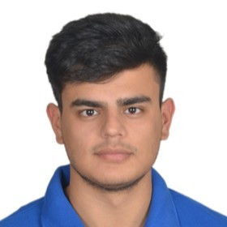

|
Ujjawal Chugh
I am a Staff Engineer at Samsung R&D, Bangalore, India with 5+ years of experience in both cutting-edge AI research and end-to-end product development. I am part of the research group Samsung Advanced Institute of Technology (SAIT), India. I lead full-cycle projects, from gathering requirements to launching and maintaining products, while contributing to the research community with published papers.
I completed my undergraduate studies in Computer Engineering from NSUT, New Delhi, India in 2019.
My Bachelor's thesis on using Reinforcement Learning to facilitate entry and exit into stock market was advised by Dr. Pinaki Chakraborty.
Email /
CV /
Google Scholar /
LinkedIn /
Github
|

|
An Automated Approach to Accelerate DNNs on Edge Devices
Ujjawal Chugh*; Arnab Mitra; Ankur Deshwal; N. P. Swaroop; Aditi Saluja; Seungwon Lee; Joonho Song
IEEE, 2021 International Symposium on Circuits and Systems (ISCAS)
Paper Link
In this work, we provide an automated way of optimizing Convolutional Neural Network (CNN) models using Deep Reinforcement Learning (DRL) algorithm. The experiments with our DRL technique demonstrate 1.85×, 1.58×, 1.64× speedup in execution time for MobileNetV1, MobileNetV2 and Efficientnet-lite0 CNN models respectively on Mobile CPU devices.
|
Autotuning LSTM for Accelerated Execution on Edge
Aditi Saluja; Arnab Mitra; Ankur Deshwal; Kavitha Madhu; Ujjawal Chugh; Seungwon Lee; Joonho Song
IEEE, 2021 International Symposium on Circuits and Systems (ISCAS)
Paper Link
In this paper, we auto-tune the implementation of Long Short Term Memory (LSTM) operations which are widely used in sequence based AI applications. To exhaustively search through the space of optimizations and its parameters, we develop a high-level autotuning framework based on Halide. We use grid search to find the parameters that lead to minimum runtime and further present TPE based search method to find the near-optimal runtime in a limited number of trials. We observe 2.2× -3.1× speedup in execution time for LSTM layers used in widely deployed GNMT and DeepSpeech2 models.
|
Awards and Recognition
- Samsung Excellence Award :
Awarded the Super Tech Award by Samsung R&D Institute in the innovator category for my contribution in research projects and for publishing two research papers in international top tier conferences.
- Samsung Software Competency Test:
Among the 10% of the team to clear the professional level of the test which assesses challenging programming implementation skills, held across Samsung software centres worldwide.
|
|
{kind=link}